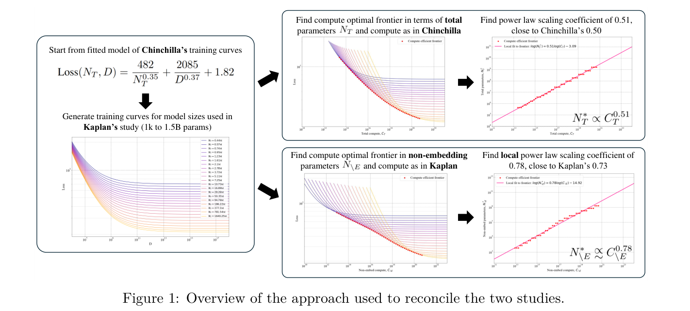
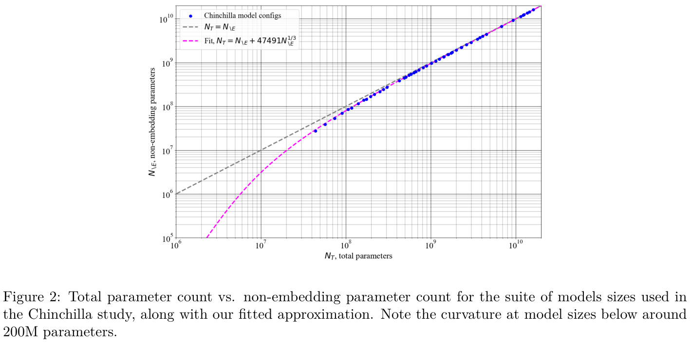
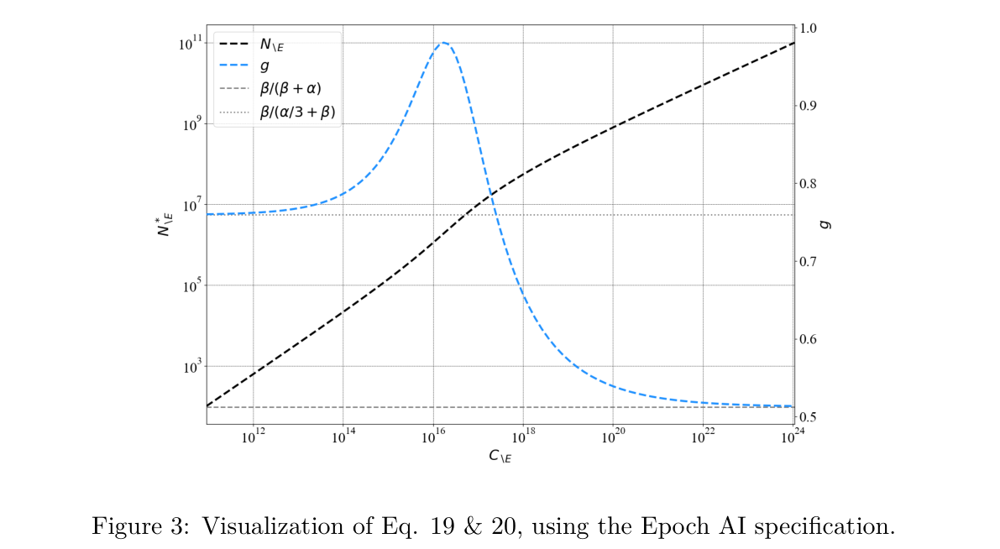
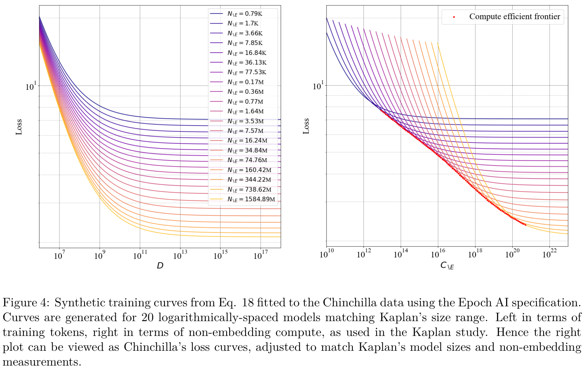
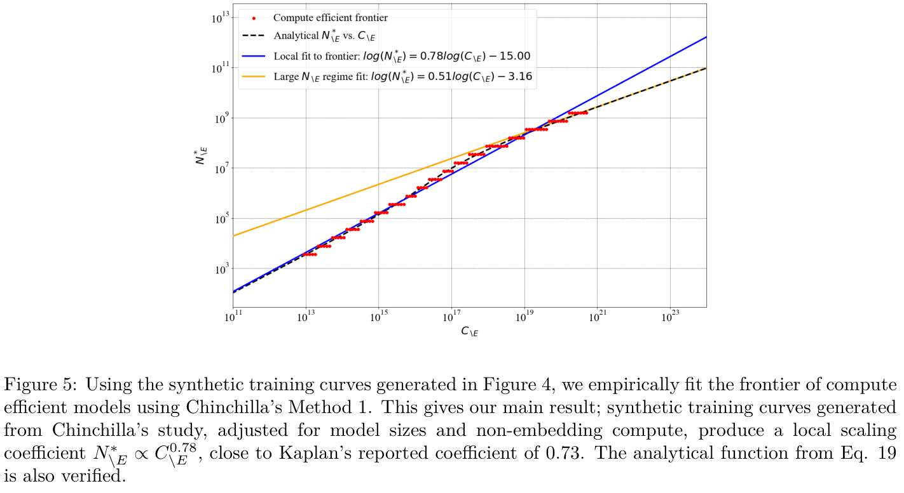
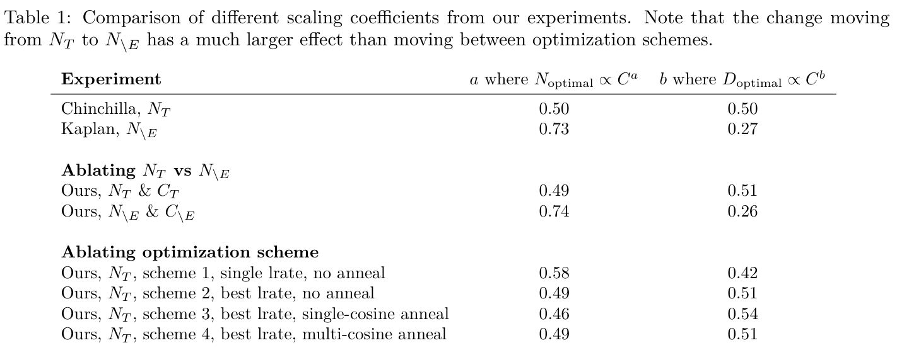
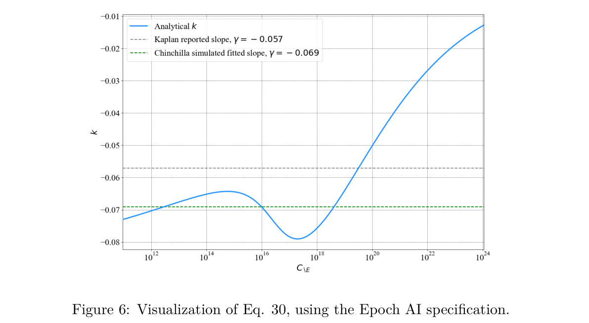
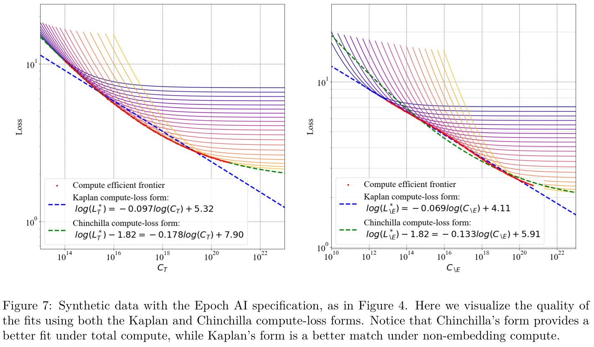

发表于 Transactions on Machine Learning Research（2024 年 11 月）
调和 Kaplan 与 Chinchilla 的 scaling laws
Tim Pearce Microsoft Research
Jinyeop Song MIT
在 OpenReview 接受评审：https://openreview.net/forum?id=NLoaLyuUUF
摘要
Kaplan 等（2020，简称“Kaplan”）和 Hoffmann 等（2022，简称“Chinchilla”）研究了针对下一 token 语言预测训练的 transformer 的扩展行为。对于给定计算预算 \(C\)，如何设置参数量 \(N\) 和训练 token 数 \(D\) 才能获得尽可能低的 loss，这两项研究给出了不同估计。Kaplan：\(N_{\mathrm{optimal}}\propto C^{0.73}\)；Chinchilla：\(N_{\mathrm{optimal}}\propto C^{0.50}\)。本文发现，这一差异很大程度上可归因于 Kaplan 统计的是非 embedding 参数而非总参数，且其分析是在较小规模上进行的。在这些条件下模拟 Chinchilla 研究，会产生接近 Kaplan 结果的有偏扩展系数。因此，本文通过解释 Kaplan 最初高估的主要原因，再次确认了 Chinchilla 的扩展系数。第二项贡献是解释了已报告的 loss 与计算量关系之间的差异。这些发现促使我们建议，未来的 scaling 研究采用总参数量和总计算量。

1 引言
Kaplan 等（2020，简称“Kaplan”）和 Hoffmann 等（2022，简称“Chinchilla”）提供了两项颇具影响力的研究，衡量规模对大语言模型（LLM）的影响。它们都指导了大规模训练在给定计算预算 \(C\) 下如何权衡模型参数量 \(N\) 与训练 token 数 \(D\)，但提出的建议相互冲突。Kaplan 发现 \(N_{\mathrm{optimal}}\propto C^{0.73}\)、\(D_{\mathrm{optimal}}\propto C^{0.27}\)，由此得出“大模型可能比大数据更重要”的结论，随后几年训练的 LLM 把更多资源投入（接下页）。
（接上页）模型大小，而较少投入数据规模。随后 Chinchilla 研究发现 \(N_{\mathrm{optimal}}\propto C^{0.50}\)、\(D_{\mathrm{optimal}}\propto C^{0.50}\)，从而提出其核心论点：“对于当前许多 LLM，本应在更多 token 上训练更小的模型，以获得性能最优的模型”，并由此引发了在更多数据上训练规模较适中的 LLM 的趋势。
是什么导致了这些扩展系数估计的差异，使得大量计算资源（以及相应的排放与资金）被低效使用？有人提出，差异可能由不同的优化方案（Hoffmann 等，2022）或数据集（Bi 等，2024）解释。本文认为这些解释不完整，并提出一个简单的替代解释：差异很大程度上源自 Kaplan 统计非 embedding 参数而非总参数，且其分析是在较小规模上进行的。
我们发现，这一方法差异也参与造成了所报告计算量与 loss 关系的差异。Kaplan：\(L_{\mathrm{optimal}}\propto C^{0.057}\)；Chinchilla：\(L_{\mathrm{optimal}}-E\propto C^{0.178}\)。（指数符号按本页原文保留。）
具体而言，本文提供以下贡献。
- 我们建立了一种解析方法，比较 Kaplan 与 Chinchilla 报告的扩展关系（第 3 节）。该方法发现，在使用非 embedding 参数、且规模较小时，Kaplan 报告的关系与 Chinchilla 局部一致。
- 其次，我们研究已报告的计算量与 loss 关系（第 5 节）。非 embedding 参数和较小模型规模，再加上计算量–loss 形式中缺少偏置项，同样导致了 Kaplan 的有偏估计。
- 我们建议，今后的 scaling 研究衡量总参数量与总计算量，并在计算量–loss 关系中使用偏置项。
2 预备知识
本节介绍背景知识与定义（第 2.1 节），概述主要结果的分析方法（第 2.2 节），并列出假设（第 2.3 节）。
2.1 问题设定
神经 scaling laws。Kaplan 等（2020）与 Hoffmann 等（2022）通过实验研究了用于语言建模的 transformer 中参数量 \(N\)、训练 token 数 \(D\)、训练计算量 \(C\) 和 loss \(L\) 之间关系的建模。主要考虑的关系函数形式是幂律 \(y=ax^b\)，这一形式在科学领域中被广泛用于描述两个量 \(x\)、\(y\) 之间跨越许多数量级仍成立的关系，例如 Kello 等（2010）。
\(N\) 和 \(C\) 的定义。两项研究的一个区别是 \(N\)、\(C\) 的定义。Kaplan 用非 embedding 参数 \(N_{\backslash E}\) 和非 embedding 计算量 \(C_{\backslash E}\) 研究关系，排除了词表与位置索引 embedding 层的贡献 \(N_E\)。相比之下，Chinchilla 研究总参数量 \(N_T\) 和总计算量 \(C_T\)。我们定义：
\[N_T=N_E+N_{\backslash E},\qquad\text{(1)}\] \[N_E=(h+v)d.\qquad\text{(2)}\]其中，\(d\) 是 transformer residual stream 的维度，\(v\) 是词表大小，\(h\) 是上下文长度（仅在学习位置 embeddings 时计入）。采用训练计算 FLOPs 的常用近似 \(C=6ND\)（系数 6 包含前向与反向传播），我们定义总计算量和非 embedding 计算量：
\[C_T=6N_TD=6(N_E+N_{\backslash E})D,\qquad\text{(3)}\] \[C_{\backslash E}=6N_{\backslash E}D.\qquad\text{(4)}\]计算最优性。计算量的定义 \(C=6ND\) 表明，在给定计算预算下，参数量与训练 token 数存在直接权衡。两项研究都关注这些量的“计算最优”配置，即在给定计算预算下，能够带来最低 loss 的参数量和训练 token 数。对于总参数量，这写为（使用 \(*\) 表示“最优”）：
\[N_T^*=\operatorname*{arg\,min}_{N_T\ \mathrm{s.t.}\ C_T=6N_TD}L(N_T,C_T).\qquad\text{(5)}\]采用这一记号，估计的扩展系数可以更精确地写为：
\[\text{Kaplan: }N_{\backslash E}^*\propto C_{\backslash E}^{0.73},\qquad\text{(6)}\] \[\text{Chinchilla: }N_T^*\propto C_T^{0.50}.\qquad\text{(7)}\]（注意，虽然本文关注参数量的扩展系数，但采用 \(C=6ND\) 就隐含确定了数据系数：\(N\propto C^a\Rightarrow C/D\propto C^a\Rightarrow D\propto C^{1-a}\)。）
函数形式。Chinchilla 使用的一种联系 \(N_T,D,L\) 的重要函数形式为：
\[L(N_T,D)=\frac{N_c}{N_T^\alpha}+\frac{D_c}{D^\beta}+E,\qquad\text{(8)}\]其中 \(N_c,D_c,\alpha,\beta>0\) 是通过实验拟合的常数，\(E\) 是语言固有的“不可约减”loss。该形式便利地产生幂律关系：\(N_T^*\propto C_T^a\)，其中 \(a=\beta/(\alpha+\beta)\)；\(D_T^*\propto C_T^b\)，其中 \(b=\alpha/(\alpha+\beta)\)；以及 \(L_T^*-E\propto C_T^{-\gamma}\)，其中 \(\gamma=\alpha\beta/(\alpha+\beta)\)。
式（8）的常数有两套可能的设定：Chinchilla 最初报告的一套，以及 Besiroglu 等（2024）在重新分析中报告、并声称修正了拟合过程小错误的一套。本文同时报告这两套设定的结果。
\[\begin{aligned}\text{Chinchilla 设定： }&N_c=406.4,D_c=410.7,\alpha=0.3392,\\&\beta=0.2849,E=1.693\Rightarrow N_T^*\propto C_T^{0.46}.\end{aligned}\qquad\text{(9)}\] \[\begin{aligned}\text{Epoch AI 设定： }&N_c=482.0,D_c=2085.43,\alpha=0.3478,\\&\beta=0.3658,E=1.817\Rightarrow N_T^*\propto C_T^{0.51}.\end{aligned}\qquad\text{(10)}\]2.2 分析概述
我们的分析使用 Chinchilla 和 Kaplan 研究的信息与数据，估计如果 Chinchilla 的关系用 \(N_{\backslash E}\)、\(C_{\backslash E}\) 表达，并在 Kaplan 使用的较小模型规模上进行，会出现怎样的 scaling laws；图 1 对此进行了概括。
我们将看到，对于较大的 \(N_T\)，\(N_E\) 在模型参数和计算成本中所占比例可忽略。因此，在大参数量区间，两个系数直接相互冲突。在较小的 \(N_T\) 下，\(N_E\) 不可忽略（这正是 Kaplan 研究考虑的范围：768 至 1.5B 参数）。我们发现，在这一范围的较小端，\(N_{\backslash E}^*\) 与 \(C_{\backslash E}\) 的关系实际上并非幂律。然而，在这一小规模上拟合“局部”幂律，会得到接近 Kaplan 的系数，从而大致调和两个结果。
第 3 节的方法分为以下步骤。
- 步骤 1：拟合一个由 \(N_T\) 预测 \(N_{\backslash E}\) 的适当函数。
- 步骤 2：将该函数纳入以 \(N_T\)、\(C_T\) 预测 loss 的模型。
- 步骤 3：解析推导 \(N_{\backslash E}^*\) 与 \(C_{\backslash E}\) 的关系。
- 步骤 4：在 Kaplan 使用的模型大小上，根据 Chinchilla loss 模型模拟合成数据；拟合以 \(C_{\backslash E}\) 表示 \(N_{\backslash E}^*\) 的局部幂律。
第 4 节通过训练一组极小规模语言模型，并在不同设置下进行 scaling law 分析，对我们的分析作实验验证。仅将统计口径从 \(N_T\) 改为 \(N_{\backslash E}\)，就能分别产生与 Chinchilla 和 Kaplan 一致的系数，而多个 token 预算和衰减计划并不会产生这种效果。
第 5 节提出第二项相关贡献。我们调和两项研究提出的 loss 与计算量关系的差异。我们采用与上述类似的分析，但步骤 3、4 现在针对最优 loss \(L_{\backslash E}^*\) 与计算量 \(C_{\backslash E}\) 的关系进行。因此，我们同样从 Chinchilla 数据出发，修正排除 embedding 参数与计算量的影响，并考虑 Kaplan 研究使用的较小模型规模，以及拟合函数选择的额外差异。经过这些修正，我们能够大致恢复 Kaplan 的计算量–loss 系数，从而调和两项研究。
2.3 假设
为保持透明，我们列出分析中的假设和近似。
- 我们假设 \(C_{\backslash E}=6N_{\backslash E}D\)、\(C_T=6N_TD\)。
- 我们假设总参数量和非 embedding 参数量之间采用式（11）的固定函数形式，并利用 Chinchilla 的模型配置通过实验拟合 \(\omega\)。
- 我们假设 loss、总参数量与训练数据之间采用式（8）的固定函数形式。我们报告使用 Chinchilla（式 9）和 Epoch AI（式 10）两套拟合常数的结果。
- 我们使用从 0.79k 至 1.58B 非 embedding 参数、按对数等距分布的 20 个模型大小来近似 Kaplan 的模型。
3 分析：计算量–参数量扩展系数
本节介绍主要分析。我们表明，在小参数量区间，若使用非 embedding 参数进行计算，可以出现 0.74 至 0.78 的局部扩展系数（接近 Kaplan 的 0.73），同时仍与 Chinchilla 系数一致。
步骤 1 拟合由 \(N_T\) 预测 \(N_{\backslash E}\) 的适当函数
我们需要一个适当函数联系非 embedding 参数量与总参数量。我们提出采用：
\[N_T=N_{\backslash E}+\omega N_{\backslash E}^{1/3},\qquad\text{(11)}\]其中常数 \(\omega>0\)。该函数有若干良好性质（严格递增，且 \(\lim_{N_T\to\infty}N_T=N_{\backslash E}\)，原文如此，证明见脚注 2），也可以同时从 Kaplan 和 Chinchilla 研究得到动机。
Kaplan 的视角。考虑 Kaplan 的参数统计方法：
\[N_T=12ld^2+N_E,\qquad\text{(12)}\]其中 \(l\) 为层数。虽然 Kaplan 没有列出模型配置，但他们研究了固定大小模型的不同宽深比 \(A=d/l\)。他们发现，给定大小的模型在一段宽深比范围内表现相近，而且不受模型规模影响（其图 5）。因此，我们可以假定采用固定宽深比的模型定尺寸方案（从其图看，\(A\approx40\) 似乎合理）。采用此方案（在式 12 中令 \(l=d/A\)）可得：
\[N_T=\frac{12}{A}d^3+N_E.\qquad\text{(13)}\]注意 \(N_{\backslash E}=(12/A)d^3\Rightarrow d=(N_{\backslash E}(A/12))^{1/3}\)，结合 \(N_E=(v+h)d\)，得到：
\[N_T=N_{\backslash E}+(v+h)\left(\frac A{12}\right)^{1/3}N_{\backslash E}^{1/3}.\qquad\text{(14)}\]这与式（11）形式相同，其中 \(\omega=(v+h)(A/12)^{1/3}\)。

Chinchilla 的视角。我们针对一定范围的 \(N_T\)（44M 至 16B），将函数 \(N_T=N_{\backslash E}+\omega N_{\backslash E}^{\delta}\)（注意指数可学习）拟合到 Hoffmann 等（2022）表 A9 列出的 Chinchilla 模型配置。我们使用报告的词表大小 32,000，根据式（2）计算 \(N_E\)，但忽略上下文长度 2,048，因为 Chinchilla 使用不可学习的位置 embeddings（不过，将其计入只会稍微影响系数）。
图 2 展示模型配置，以及用 numpy 的 polyfit 拟合所得的关系，其系数为 \(\omega=47491\)、\(\delta=0.34\)。指数接近 \(1/3\)，隐含的宽深比为 \(A=39.2\)（由 \(\omega\) 推得）。因此，这进一步支持了式（11）的形式。
步骤 2 将该函数纳入以 \(N_T\)、\(C_T\) 预测 loss 的模型
回顾，虽然我们关心 \(N_T^*\) 对 \(C_T\) 的依赖，但这种依赖只通过它们与 loss 的共同关系产生：
\[N_T^*=\operatorname*{arg\,min}_{N_T\ \mathrm{s.t.}\ C_T=6N_TD}L(N_T,C_T).\qquad\text{(15)}\]为解析研究其扩展关系，我们需要 loss 的解析形式，因此采用 Chinchilla 研究中的函数形式。取式（8），并使用 \(C_T=6N_TD\)，得到：
\[L(N_T,C_T)=\frac{N_c}{N_T^\alpha}+\frac{D_c}{(C_T/6N_T)^\beta}+E.\qquad\text{(16)}\]对式（16）关于 \(N_T\) 求导、令导数为零，并整理为关于 \(N_T\) 的形式，可得：
\[N_T^*=\left(\frac\alpha\beta\frac{N_c}{D_c}\right)^{\!1/(\alpha+\beta)}\left(\frac{C_T}{6}\right)^{\!\beta/(\alpha+\beta)},\quad\text{即 }N_T^*\propto C^{\beta/(\alpha+\beta)}.\qquad\text{(17)}\]现在，我们将式（16）改写为非 embedding 参数量和计算量的形式。注意，虽然 \(N_T\) 需要步骤 1 的式（11），但第二项不需要，因为 \(D=C_T/(6N_T)=C_{\backslash E}/(6N_{\backslash E})\)。
\[L(N_{\backslash E},C_{\backslash E})=\frac{N_c}{(N_{\backslash E}+\omega N_{\backslash E}^{1/3})^\alpha}+\frac{D_c}{(C_{\backslash E}/6N_{\backslash E})^\beta}+E.\qquad\text{(18)}\]步骤 3 解析推导 \(N_{\backslash E}^*\) 与 \(C_{\backslash E}\) 的关系
为求得 \(N_{\backslash E}^*\) 与 \(C_{\backslash E}\) 的关系，我们对式（18）关于 \(N_{\backslash E}\) 求导，令其为零并整理：
\[\begin{aligned}6N_{\backslash E}^*&\left(N_{\backslash E}^*+\frac\omega3(N_{\backslash E}^*)^{1/3}\right)^{-1/\beta}\\&\cdot\left(N_{\backslash E}^*+\omega(N_{\backslash E}^*)^{1/3}\right)^{(1+\alpha)/\beta}\left(\frac\beta\alpha\frac{D_c}{N_c}\right)^{1/\beta}=C_{\backslash E}.\end{aligned}\qquad\text{(19)}\]这表明，一般情况下，\(N_{\backslash E}^*\) 与 \(C_{\backslash E}\) 的关系并不是幂律。不过，我们可以考虑“局部”幂律近似：对于某个特定的 \(N_{\backslash E}\)，存在常数 \(g\) 给出一阶近似（记为 \(\overset{\propto}{\sim}\)）\(N_{\backslash E}^*\overset{\propto}{\sim}C_{\backslash E}^{g}\)，其中 \(g\) 定义为：
\[\begin{aligned}\frac1g:=\frac{d\log C_{\backslash E}}{d\log N_{\backslash E}^*}=1&-\frac1\beta\frac{(N_{\backslash E}^*)^{2/3}+\omega/9}{(N_{\backslash E}^*)^{2/3}+\omega/3}\\&+\frac{\alpha+1}\beta\frac{(N_{\backslash E}^*)^{2/3}+\omega/3}{(N_{\backslash E}^*)^{2/3}+\omega}.\end{aligned}\qquad\text{(20)}\]推导见附录 A.1。图 3 绘制了式（19）、（20），其中 \(\alpha,\beta,N_c,D_c\) 采用 Epoch AI 设定，\(\omega=47491\)。存在三个阶段。
- 小规模时，\(\lim_{N_{\backslash E}^*\to0}1/g=(\alpha/3+\beta)/\beta\Rightarrow N_{\backslash E}^*\overset{\propto}{\sim}C_{\backslash E}^{\beta/(\alpha/3+\beta)}\)（脚注 3）。
- 大规模时，\(\lim_{N_{\backslash E}^*\to\infty}1/g=(\alpha+\beta)/\beta\Rightarrow N_{\backslash E}^*\overset{\propto}{\sim}C_{\backslash E}^{\beta/(\alpha+\beta)}\)（脚注 4），与式（17）的 \(N_T\) 情况相同。
- 还存在过渡阶段，\(g\) 会短暂上升。这发生在两个极限之间，即 \(N_{\backslash E}^{2/3}\) 与 \(\omega\) 同数量级时。恰在 \(N_{\backslash E}^{2/3}=\omega\) 处，有 \(N_T=N_{\backslash E}+\omega N_{\backslash E}^{1/3}=2N_{\backslash E}\)，即 embedding 与非 embedding 参数各占 50%。图 3 中的过渡区域就在该点附近：\(N_{\backslash E}=\omega^{3/2}=47491^{3/2}\approx10^7\)。
步骤 4 在 Kaplan 使用的模型大小上，从 Chinchilla loss 模型模拟合成数据，并拟合以 \(C_{\backslash E}\) 表示 \(N_{\backslash E}^*\) 的局部幂律
从图 3 读取 \(g\)，可以为给定的 \(N_{\backslash E}^*\) 估计局部幂律，从而得到扩展系数。但哪个 \(N_{\backslash E}^*\) 点值能代表 Kaplan 研究并不明确。我们选择更忠实的估计过程：在 Kaplan 使用的模型大小范围内，根据式（18）生成合成训练曲线，再利用计算效率前沿上的模型拟合系数。这也会验证式（19）中 \(N_{\backslash E}^*\) 与 \(C_{\backslash E}\) 的解析表达式。
图 4 显示生成的合成训练曲线。我们模拟了 20 个模型，\(N_{\backslash E}\) 从 790 参数至 1.58B（Kaplan 报告模型大小“从 768 至 15 亿非 embedding 参数”）。式（18）的其他常数采用 Epoch AI 设定（式 10），并令 \(\omega=47491\)；同时也报告 Chinchilla 设定（式 9）的最终结果。
主要结果。图 5 显示，使用这些合成训练曲线所产生的计算最优前沿（Chinchilla 方法 1）拟合幂律时，得到的扩展系数。这是我们的主要（接下页）。

（接上页）结果：从 Chinchilla 研究中的模型出发，修改两点以与 Kaplan 研究一致（\(N_T\to N_{\backslash E}\)，小模型大小为 0.79k–1.58B 参数），我们得到局部扩展系数：
\[\text{Epoch AI 设定： }N_{\backslash E}^*\overset{\propto}{\sim}C_{\backslash E}^{0.78},\qquad\text{(21)}\] \[\text{Chinchilla 设定： }N_{\backslash E}^*\overset{\propto}{\sim}C_{\backslash E}^{0.74}.\qquad\text{(22)}\]它们接近 Kaplan 的 0.73。因此，这表明经过上述两项调整，Chinchilla 系数与 Kaplan 系数大致一致。这构成本文的主要结果，调和了两个看似冲突的结果。
4 实验：计算量–参数量扩展系数
我们提供简要实验，验证上述论断对小规模（百万参数级）训练模型成立。
实验 1。首先，我们验证分别使用 \(N_T\) 和 \(N_{\backslash E}\) 时，扩展系数是否接近 Chinchilla 和 Kaplan 的结果。
我们在 BookCorpus 数据集上训练五个模型，大小为 \(N_T\in[0.8\mathrm M,1.6\mathrm M,2.1\mathrm M,3.3\mathrm M,4.6\mathrm M]\)。使用词表大小 50,257 的 GPT-2 tokenizer，上下文长度为 16（虽然远小于通常设置，但实验表明，扩展系数不受上下文长度影响）。使用 Chinchilla 方法 1 拟合扩展系数，并采用近似 \(C=6ND\)。
模型训练的更新次数为 \([4000,4000,4000,8000,8000]\)，每次更新的 batch 大小为 65,536 token，因此总训练 token 数为 \(D\in[262\mathrm M,262\mathrm M,262\mathrm M,524\mathrm M,524\mathrm M]\)。每种模型大小的最佳学习率从 \([0.001,0.005,0.01,0.05]\) 中选择，不做退火。
结果 1。表 1 表明，在 \(N_T\) 上拟合系数时，得到 \(N_T\propto C_T^{0.49}\)；对 \(N_{\backslash E}\)，得到 \(N_{\backslash E}\propto C_{\backslash E}^{0.74}\)。它们分别与 Chinchilla 和 Kaplan 的系数十分接近。
实验 2。我们对优化方案进行消融，表明每个模型使用多个训练预算只会轻微影响系数（与 Chinchilla 的解释相反）。
- 方案 1：所有模型都设置单一学习率 0.001；每个大小只训练一个模型，不做退火。
- 方案 2：为每个模型选择最佳学习率；每个大小只训练一个模型，不做退火（与 \(N_T\) 对 \(N_{\backslash E}\) 的比较相同）。


- 方案 3：为每个模型选择最佳学习率；每个大小只训练一个模型，并在更新预算处应用余弦退火。（Kaplan 研究使用此方案。）
- 方案 4：为每个模型选择最佳学习率；每个大小在六种不同预算 \([0.25D,0.5D,0.75D,1.0D,1.5D,2.0D]\) 下训练六个模型，并应用余弦退火。（Chinchilla 研究使用此方案。）
结果 2。表 1 表明，优化方案对扩展系数的影响，小于从 \(N_T\) 切换至 \(N_{\backslash E}\) 的影响。仅使用一组不做退火的模型（方案 2），就能得到与计算成本更高的方案 4 相同的系数。Chinchilla 曾认为，从 Kaplan 的方案 3 改为方案 4 会降低扩展系数；我们的实验表明，情况正好相反，系数从 0.46 增至 0.49。这或许能解释式（21）、（22）中对扩展系数的轻微高估。

5 分析：计算量–loss 扩展系数
除了分析计算最优参数扩展，Kaplan 与 Chinchilla 还描述了在参数量最优扩展的假设下，计算量与 loss 之间的扩展关系。Kaplan 同样以非 embedding 计算量表示这一最优 loss，而 Chinchilla 则以总计算量表示：
\[L_{\backslash E}^*=\min_{\mathrm{s.t.}\ C_{\backslash E}=6N_{\backslash E}D}L(N_{\backslash E},C_{\backslash E}),\qquad\text{(23)}\] \[L_T^*=\min_{\mathrm{s.t.}\ C_T=6N_TD}L(N_T,C_T).\qquad\text{(24)}\]具体而言，两项研究报告了以下联系最优 loss 和计算量的形式及系数。
\[\text{Kaplan 计算量–loss 形式： }L_{\backslash E}^*=\left(\frac{C_{\backslash E}}{C_0}\right)^{-\gamma}.\qquad\text{(25)}\] \[\text{Kaplan 计算量–loss 拟合： }L_{\backslash E}^*\propto C_{\backslash E}^{-0.057}.\qquad\text{(26)}\] \[\text{Chinchilla 计算量–loss 形式： }L_T^*=\left(\frac{C_T}{C_0}\right)^{-\gamma}+E.\qquad\text{(27)}\] \[\text{Chinchilla 拟合，Epoch AI 设定： }L_T^*-E\propto C_T^{-0.178}.\qquad\text{(28)}\] \[\text{Chinchilla 设定： }L_T^*-E\propto C_T^{-0.155}.\qquad\text{(29)}\]（Chinchilla 的计算量系数见第 A.3 节。）与计算量–参数量扩展系数类似，表面上 Kaplan 的 0.057 与 Chinchilla 的 0.155–0.178 相差很大。然而，我们将再次表明，从 Chinchilla 研究出发，调整为 Kaplan 的非 embedding 计算量、较小规模，并额外采用其计算量–loss 形式，就能大致调和两个系数。

我们的分析沿用第 3 节的四步方法。步骤 1、2 可直接复用，步骤 3、4 则改为研究最优 loss 与计算量的关系，而非此前的最优参数量与计算量关系。
步骤 3 解析推导 \(L_{\backslash E}^*\) 与 \(C_{\backslash E}\) 的关系
我们发现，\(L_{\backslash E}^*\) 与 \(C_{\backslash E}\) 的关系并非幂律（推导见第 A.2 节）。
\[\begin{aligned}\frac{d\log L_{\backslash E}^*}{d\log C_{\backslash E}}=\frac g{L_{\backslash E}^*}\Bigg[&-\alpha N_c\frac{N_{\backslash E}^*+\frac\omega3(N_{\backslash E}^*)^{1/3}}{(N_{\backslash E}^*+\omega(N_{\backslash E}^*)^{1/3})^{\alpha+1}}\\&+\beta D_c\left(\frac{C_{\backslash E}}{6N_{\backslash E}^*}\right)^{-\beta}\left(1-\frac1g\right)\Bigg].\end{aligned}\qquad\text{(30)}\]不过，我们仍可考虑局部一阶近似 \(L_{\backslash E}^*\overset{\propto}{\sim}C_{\backslash E}^k\)，其中 \(k=d\log(L_{\backslash E}^*)/d\log(C_{\backslash E})\)。图 6 对其进行了可视化。
步骤 4 在 Kaplan 使用的模型大小上，从 Chinchilla loss 模型模拟合成数据，采用 Kaplan 的计算量–loss 形式，拟合以 \(C_{\backslash E}\) 表示 \(L_{\backslash E}^*\) 的局部幂律
与第 3 节一样，我们可以使用式（30）计算关系 \(L_{\backslash E}^*\overset{\propto}{\sim}C_{\backslash E}^k\) 中 \(k\) 的点估计。但我们仍选择更忠实的过程，从 loss 曲线模拟数据，随后拟合 Kaplan 的计算量–loss 形式 \(L_{\backslash E}^*=(C_{\backslash E}/C_0)^{-\gamma}\)。两套设定分别得到：
\[\text{Epoch AI 设定： }L_{\backslash E}^*\overset{\propto}{\sim}C_{\backslash E}^{-0.069},\qquad\text{(31)}\] \[\text{Chinchilla 设定： }L_{\backslash E}^*\overset{\propto}{\sim}C_{\backslash E}^{-0.066}.\qquad\text{(32)}\]它们与 Kaplan 报告的系数 \(L_{\backslash E}^*\overset{\propto}{\sim}C_{\backslash E}^{-0.057}\) 大致一致。
图 7 展示，在分别统计总计算量和非 embedding 计算量时，Chinchilla 与 Kaplan 的计算量–loss 形式的拟合情况。我们看到，在非 embedding 计算量图中，在他们考虑的模型大小范围的小规模区域，Kaplan 的形式能很好地拟合数据。我们推测，这可能就是 Kaplan 选择这一较简单计算量–loss 形式的动机。

6 相关工作
早期工作形式化描述了语言模型如何随参数量、数据量和训练计算量而改进（Rosenfeld 等，2019；Kaplan 等，2020；Hoffmann 等，2022）。随后，研究者考察这些 scaling laws 是否也出现在其他领域（Henighan 等，2020），并尝试从理论上解释它们的存在（Hutter，2021；Maloney 等，2022；Bahri 等，2024）。
与本文思路更接近的是若干同期工作，它们研究不同设计决策对 scaling law 分析的影响。Su 等（2024）重新审视了求取扩展系数的方法。Hägele 等（2024）发现，多个独立的余弦计划可以用恒定学习率加多个短衰减，或随机权重平均，更高效地复现。我们的发现略有不同：简单的固定学习率，可以恢复与多个余弦计划非常相近的计算量–参数量扩展系数。Bi 等（2024）研究了不同超参数对 scaling laws 的影响。他们观察到，不同文本数据集会产生略有不同的最优系数，“更干净”的数据会导致更偏好增加参数量的扩展行为，并推测这可能部分解释 Kaplan 和 Chinchilla 系数的差异。
Porian 等（2024）的同期工作与本文目标相同：解释 Kaplan 和 Chinchilla 系数的差异。他们通过一组复现 Kaplan 研究的大规模实验，判定造成差异的原因按重要程度降序为：1）Kaplan 统计非 embedding 计算量，而非总计算量；2）Kaplan 使用固定长度的 warmup，对较小模型而言过长，使它们看起来效率更低；3）Kaplan 未充分调整优化超参数。我们认为，这些发现与我们的结果互补。我们仅使用两篇论文公开的信息，通过完全解析的方法，识别出了主要的“一阶”原因。（极小规模实验是在分析之后进行的验证。）这说明，将数学方法用于 scaling 这一经验科学领域很有潜力。
7 讨论
本文旨在解释 Kaplan 和 Chinchilla 扩展系数的差异。我们发现 Kaplan 研究中存在两个问题，共同使扩展系数估计产生偏差：只统计非 embedding 参数，以及研究较小的模型大小。这意味着 \(N_{\backslash E}\) 与 \(N_T\) 的真实关系存在曲率（图 5）。在较大 \(N_T\) 下，embedding 参数量变得可忽略，\(N_T=N_{\backslash E}\)，因而不会产生这种差异。或者，如果 Kaplan 直接研究以 \(N_T\) 表示的关系，即使在这一较小规模下，也不会出现该问题（实验 1 证实，即使 \(N_T<5\mathrm M\)，仍得到 \(N_T\propto C_T^{0.49}\)）。Kaplan 用计算量预测 loss 的函数形式，还进一步促成了所报告计算量–loss 扩展系数的差异。
scaling 研究之间的不一致。现有 scaling 文献对非 embedding 与总计算量的使用并不统一。一些研究（Henighan 等，2020；Gordon 等，2021；Ghorbani 等，2021；Fernandes 等，2023；Hu 等，2024；Bi 等，2024；Su 等，2024）沿用 Kaplan 的方法，采用非 embedding 参数量或计算量；另一些研究（Clark 等，2022；Que 等，2024；Wang 等，2023）沿用 Chinchilla 的方法，采用总参数量。本文表明，这一选择会显著改变扩展指数，使跨研究比较更复杂。同样，文献中计算量–loss 方程的选择也不一致。Clark 等（2022）、Brown 等（2020）、Smith 和 Doe（2024）等研究选择没有偏置项的 Kaplan 计算量–loss 形式。相比之下，Henighan 等（2020）、Gordon 等（2021）、Fernandes 等（2023）、Hu 等（2024）、Wang 等（2023）采用带非零偏置项的 Chinchilla 计算量–loss 形式。我们的工作同样表明，这些方法差异可能导致 scaling 预测和解释的显著差异。
scaling 研究缺乏标准化方法，可能使比较产生误导，使见解变得不够清楚。我们认为，本文有助于理解以往研究中哪些决策应该标准化。具体而言，我们建议未来研究报告总参数量而非非 embedding 参数量，并在计算量–loss 拟合模型中纳入偏置项。下文讨论这些选择的动机。此外，我们的初步证据不支持为每种模型大小使用多个余弦衰减：我们发现，每种模型大小采用单一固定学习率，就足以衡量计算最优的参数系数。
为什么 embedding 参数应对扩展行为产生贡献？多项工作证明，embedding 参数能够捕捉有意义的语言属性。词 embeddings 可以分解为语义可解释的因子（甚至浅层 Word2vec 也可以）（Mikolov 等，2013a、b；Arora 等，2018）。不同规模的 LLM 都会学习空间与时间的线性 embeddings（Gurnee 和 Tegmark，2024）。形成这种有意义的 embedding 结构，使 LLM 能够执行算术等高层语言操作（McLeish 等，2024）。因此，如果认为 embedding 层的作用不只是将 token“翻译”为正确维度的向量，那么我们看不到在参数统计中排除它们的理由。
为什么 loss–计算量预测应使用非零偏置项？从统计学习角度看，带非零偏置项的 Chinchilla 计算量–loss 形式（式 27）更合适。这一方法考虑了不可约减风险（Hernandez 等，2023），即无论模型或数据集大小如何，可达到的 loss 都有下界。这可能源于多种因素：学习算法固有的偏差或局限，或原始任务中的噪声。以语言建模为具体例子，对于序列中第一个 token 的预测，模型最多只能估计所有 token 的边缘分布，因此 loss 非零。
局限。我们的分析存在若干局限。我们旨在捕捉 Kaplan 和 Chinchilla 扩展系数差异的主要“一阶”原因，但两项研究还存在其他多项差异，也可能影响扩展系数（第 6 节）：数据集（Kaplan 使用 OpenWebText2，Chinchilla 使用 MassiveText）、transformer 细节（Kaplan 使用可学习的位置 embeddings，Chinchilla 的则固定；tokenizer 与词表大小也不同）、优化方案（Kaplan 使用方案 3，Chinchilla 使用方案 4，warmup 计划也不同）、计算量统计的差异（Kaplan 使用 \(C=6ND\)，Chinchilla 方法 1、2 使用完整计算）。不过，本文表明，这些因素对系数的影响较小。
参考文献
Sanjeev Arora, Yuanzhi Li, Yingyu Liang, Tengyu Ma, and Andrej Risteski. 词义的线性代数结构及其在一词多义中的应用. Transactions of the Association for Computational Linguistics, 6:483–495, 2018. doi: 10.1162/tacl_a_00034. URL https://aclanthology.org/Q18-1034.
Yasaman Bahri, Ethan Dyer, Jared Kaplan, Jaehoon Lee, and Utkarsh Sharma. 解释神经 scaling laws. Proceedings of the National Academy of Sciences, 121(27):e2311878121, 2024.
Tamay Besiroglu, Ege Erdil, Matthew Barnett, and Josh You. Chinchilla Scaling：一次复现尝试. arXiv 预印本 arXiv:2404.10102, 2024.
Xiao Bi, Deli Chen, Guanting Chen, Shanhuang Chen, Damai Dai, Chengqi Deng, Honghui Ding, Kai Dong, Qiushi Du, Zhe Fu, et al. DeepSeek LLM：以长期主义扩展开源语言模型. arXiv 预印本 arXiv:2401.02954, 2024.
Tom Brown, Benjamin Mann, Nick Ryder, Melanie Subbiah, Jared D Kaplan, Prafulla Dhariwal, Arvind Neelakantan, Pranav Shyam, Girish Sastry, Amanda Askell, Sandhini Agarwal, Ariel Herbert-Voss, Gretchen Krueger, Tom Henighan, Rewon Child, Aditya Ramesh, Daniel Ziegler, Jeffrey Wu, Clemens Winter, Chris Hesse, Mark Chen, Eric Sigler, Mateusz Litwin, Scott Gray, Benjamin Chess, Jack Clark, Christopher Berner, Sam McCandlish, Alec Radford, Ilya Sutskever, and Dario Amodei. 语言模型是少样本学习器. In Advances in Neural Information Processing Systems, volume 33, pp. 1877–1901. Curran Associates, Inc., 2020.
Aidan Clark, Diego de Las Casas, Aurelia Guy, Arthur Mensch, Michela Paganini, Jordan Hoffmann, Bogdan Damoc, Blake Hechtman, Trevor Cai, Sebastian Borgeaud, et al. 路由语言模型的统一 scaling laws. In International conference on machine learning, pp. 4057–4086. PMLR, 2022.
Patrick Fernandes, Behrooz Ghorbani, Xavier Garcia, Markus Freitag, and Orhan Firat. 多语言神经机器翻译的 scaling laws. In International Conference on Machine Learning, pp. 10053–10071. PMLR, 2023.
Behrooz Ghorbani, Orhan Firat, Markus Freitag, Ankur Bapna, Maxim Krikun, Xavier Garcia, Ciprian Chelba, and Colin Cherry. 神经机器翻译的 scaling laws. arXiv 预印本 arXiv:2109.07740, 2021.
Mitchell A Gordon, Kevin Duh, and Jared Kaplan. 神经机器翻译的数据与参数 scaling laws. In Proceedings of the 2021 Conference on Empirical Methods in Natural Language Processing, pp. 5915–5922, 2021.
Wes Gurnee and Max Tegmark. 语言模型表征空间与时间, 2024.
Alexander Hägele, Elie Bakouch, Atli Kosson, Loubna Ben Allal, Leandro Von Werra, and Martin Jaggi. 超越固定训练时长的 scaling laws 与计算最优训练. arXiv 预印本 arXiv:2405.18392, 2024.
Tom Henighan, Jared Kaplan, Mor Katz, Mark Chen, Christopher Hesse, Jacob Jackson, Heewoo Jun, Tom B Brown, Prafulla Dhariwal, Scott Gray, et al. 自回归生成建模的 scaling laws. arXiv 预印本 arXiv:2010.14701, 2020.
Danny Hernandez, Jared Kaplan, Tom Henighan, Sam McCandlish, Tom B. Brown, Andrew Carr, Dieterich Lawson, Jacob Steinhardt, Chris Olah, and Dario Amodei. 神经语言模型的 scaling laws. Proceedings of the National Academy of Sciences, 120(26), 2023. doi: 10.1073/pnas.2311878121. URL https://www.pnas.org/doi/10.1073/pnas.2311878121.
Jordan Hoffmann, Sebastian Borgeaud, Arthur Mensch, Elena Buchatskaya, Trevor Cai, Eliza Rutherford, Diego de Las Casas, Lisa Anne Hendricks, Johannes Welbl, Aidan Clark, et al. 训练计算最优的大语言模型. arXiv 预印本 arXiv:2203.15556, 2022.
参考文献（续）
Shengding Hu, Yuge Tu, Xu Han, Chaoqun He, Ganqu Cui, Xiang Long, Zhi Zheng, Yewei Fang, Yuxiang Huang, Weilin Zhao, et al. MiniCPM：通过可扩展的训练策略揭示小语言模型的潜力. arXiv 预印本 arXiv:2404.06395, 2024.
Marcus Hutter. 学习曲线理论. arXiv 预印本 arXiv:2102.04074, 2021.
Jared Kaplan, Sam McCandlish, Tom Henighan, Tom B Brown, Benjamin Chess, Rewon Child, Scott Gray, Alec Radford, Jeffrey Wu, and Dario Amodei. 神经语言模型的 scaling laws. arXiv 预印本 arXiv:2001.08361, 2020.
Christopher T. Kello, Gordon D.A. Brown, Ramon Ferrer i Cancho, John G. Holden, Klaus Linkenkaer-Hansen, Theo Rhodes, and Guy C. Van Orden. 认知科学中的 scaling laws. Trends in Cognitive Sciences, 14(5):223–232, 2010. ISSN 1364-6613. doi: https://doi.org/10.1016/j.tics.2010.02.005. URL https://www.sciencedirect.com/science/article/pii/S136466131000046X.
Alexander Maloney, Daniel A Roberts, and James Sully. 神经 scaling laws 的可解模型. arXiv 预印本 arXiv:2210.16859, 2022.
Sean McLeish, Arpit Bansal, Alex Stein, Neel Jain, John Kirchenbauer, Brian R. Bartoldson, Bhavya Kailkhura, Abhinav Bhatele, Jonas Geiping, Avi Schwarzschild, and Tom Goldstein. 使用恰当 embeddings 的 transformer 能够进行算术运算, 2024.
Tomas Mikolov, Ilya Sutskever, Kai Chen, Greg S Corrado, and Jeff Dean. 词与短语的分布式表示及其组合性. In C.J. Burges, L. Bottou, M. Welling, Z. Ghahramani, and K.Q. Weinberger (eds.), Advances in Neural Information Processing Systems, volume 26. Curran Associates, Inc., 2013a. URL https://proceedings.neurips.cc/paper_files/paper/2013/file/9aa42b31882ec039965f3c4923ce901b-Paper.pdf.
Tomas Mikolov, Wen-tau Yih, and Geoffrey Zweig. 连续空间词表示中的语言规律. In Lucy Vanderwende, Hal Daumé III, and Katrin Kirchhoff (eds.), Proceedings of the 2013 Conference of the North American Chapter of the Association for Computational Linguistics: Human Language Technologies, pp. 746–751, Atlanta, Georgia, June 2013b. Association for Computational Linguistics. URL https://aclanthology.org/N13-1090.
Tomer Porian, Mitchell Wortsman, Jenia Jitsev, Ludwig Schmidt, and Yair Carmon. 消解语言模型计算最优 scaling 的分歧. arXiv 预印本 arXiv:2406.19146, 2024.
Haoran Que, Jiaheng Liu, Ge Zhang, Chenchen Zhang, Xingwei Qu, Yinghao Ma, Feiyu Duan, Zhiqi Bai, Jiakai Wang, Yuanxing Zhang, et al. D-CPT Law：大语言模型面向特定领域的持续预训练 scaling law. arXiv 预印本 arXiv:2406.01375, 2024.
Jonathan S Rosenfeld, Amir Rosenfeld, Yonatan Belinkov, and Nir Shavit. 跨规模泛化误差的构造性预测. arXiv 预印本 arXiv:1909.12673, 2019.
J. Smith and A. Doe. xyz 在 abc 中的作用. bioRxiv, 2024. doi: 10.1101/2024.06.06.597716v1. URL https://www.biorxiv.org/content/10.1101/2024.06.06.597716v1.full.pdf.
Hui Su, Zhi Tian, Xiaoyu Shen, and Xunliang Cai. 揭开 scaling laws 的奥秘：第一部分. arXiv 预印本 arXiv:2403.06563, 2024.
Peihao Wang, Rameswar Panda, and Zhangyang Wang. 通过模型复用实现数据高效的神经 scaling law. In International Conference on Machine Learning, pp. 36193–36204. PMLR, 2023.
A 附录
A.1 式（20）的推导
本节推导式（20）：
\[\begin{aligned}\frac1g:=\frac{d\log C_{\backslash E}}{d\log N_{\backslash E}^*}=1&-\frac1\beta\frac{(N_{\backslash E}^*)^{2/3}+\omega/9}{(N_{\backslash E}^*)^{2/3}+\omega/3}\\&+\frac{\alpha+1}\beta\frac{(N_{\backslash E}^*)^{2/3}+\omega/3}{(N_{\backslash E}^*)^{2/3}+\omega}.\end{aligned}\qquad\text{(33)}\]首先注意：
\[\frac{d\log C_{\backslash E}}{d\log N_{\backslash E}^*}=\frac{d\log C_{\backslash E}}{dN_{\backslash E}^*}\frac{dN_{\backslash E}^*}{d\log N_{\backslash E}^*}\qquad\text{(34)}\] \[=\frac{d\log C_{\backslash E}}{dN_{\backslash E}^*}N_{\backslash E}^*.\qquad\text{(35)}\]回顾式（19）中 \(C_{\backslash E}\) 的定义：
\[\begin{aligned}C_{\backslash E}=6N_{\backslash E}^*&\left(N_{\backslash E}^*+\frac\omega3(N_{\backslash E}^*)^{1/3}\right)^{-1/\beta}\\&\cdot\left(N_{\backslash E}^*+\omega(N_{\backslash E}^*)^{1/3}\right)^{(1+\alpha)/\beta}\left(\frac\beta\alpha\frac{D_c}{N_c}\right)^{1/\beta}.\end{aligned}\qquad\text{(36)}\] \[\begin{aligned}\log C_{\backslash E}=&\underbrace{\log N_{\backslash E}^*}_{\text{第 1 项}}-\underbrace{\frac1\beta\log\left(N_{\backslash E}^*+\frac\omega3(N_{\backslash E}^*)^{1/3}\right)}_{\text{第 2 项}}\\&+\underbrace{\frac{1+\alpha}\beta\log\left(N_{\backslash E}^*+\omega(N_{\backslash E}^*)^{1/3}\right)}_{\text{第 3 项}}+\mathrm{const}.\end{aligned}\qquad\text{(37)}\]其中 \(\mathrm{const}\) 不依赖 \(N_{\backslash E}^*\)。现在可以对每一项求导。
第 1 项的导数。
\[\frac{d\log N_{\backslash E}^*}{dN_{\backslash E}^*}=\frac1{N_{\backslash E}^*}.\qquad\text{(38)}\]第 2 项的导数。
\[\begin{aligned}&\frac1\beta\frac{d\log\left(N_{\backslash E}^*+\frac\omega3(N_{\backslash E}^*)^{1/3}\right)}{dN_{\backslash E}^*}\\=&\frac1\beta\frac{d\log\left(N_{\backslash E}^*+\frac\omega3(N_{\backslash E}^*)^{1/3}\right)}{d\left(N_{\backslash E}^*+\frac\omega3(N_{\backslash E}^*)^{1/3}\right)}\frac{d\left(N_{\backslash E}^*+\frac\omega3(N_{\backslash E}^*)^{1/3}\right)}{dN_{\backslash E}^*}\\=&\frac1\beta\frac{1+\frac\omega9(N_{\backslash E}^*)^{-2/3}}{N_{\backslash E}^*+\frac\omega3(N_{\backslash E}^*)^{1/3}}.\end{aligned}\qquad\text{(39)}\]第 3 项的导数。
\[\begin{aligned}&\frac{\alpha+1}\beta\frac{d\log\left(N_{\backslash E}^*+\omega(N_{\backslash E}^*)^{1/3}\right)}{dN_{\backslash E}^*}\\=&\frac{\alpha+1}\beta\frac{d\log\left(N_{\backslash E}^*+\omega(N_{\backslash E}^*)^{1/3}\right)}{d\left(N_{\backslash E}^*+\omega(N_{\backslash E}^*)^{1/3}\right)}\frac{d\left(N_{\backslash E}^*+\omega(N_{\backslash E}^*)^{1/3}\right)}{dN_{\backslash E}^*}\\=&\frac{\alpha+1}\beta\frac{1+\frac\omega3(N_{\backslash E}^*)^{-2/3}}{N_{\backslash E}^*+\omega(N_{\backslash E}^*)^{1/3}}.\end{aligned}\qquad\text{(40)}\]最后，按照式（35），将各项合并，再乘以 \(N_{\backslash E}^*\)。
A.2 式（30）中计算量–loss 解析形式的推导
本节推导定义如下的 \(k\)：
\[k=\frac{d\log L_{\backslash E}^*}{d\log C_{\backslash E}}.\qquad\text{(41)}\]按链式法则展开，得到：
\[k=\frac{d\log L_{\backslash E}^*}{dL_{\backslash E}^*}\frac{dL_{\backslash E}^*}{dN_{\backslash E}^*}\frac{dN_{\backslash E}^*}{d\log N_{\backslash E}^*}\frac{d\log N_{\backslash E}^*}{d\log C_{\backslash E}},\qquad\text{(42)}\] \[=\frac{N_{\backslash E}^*}{L_{\backslash E}^*}\frac{dL_{\backslash E}^*}{dN_{\backslash E}^*}g.\qquad\text{(43)}\]其中，前面已在式（20）推导出 \(g=d\log(N_{\backslash E}^*)/d\log(C_{\backslash E})\)。
因此只需再求 \(dL_{\backslash E}^*/dN_{\backslash E}^*\)。首先注意，当使用最优模型大小，即 \(N_{\backslash E}\leftarrow N_{\backslash E}^*\) 时，\(L_{\backslash E}^*\) 由式（18）给出：
\[L_{\backslash E}^*=\frac{N_c}{(N_{\backslash E}^*+\omega(N_{\backslash E}^*)^{1/3})^\alpha}+\frac{D_c}{(C_{\backslash E}/6N_{\backslash E}^*)^\beta}+E.\qquad\text{(44)}\]求导前，回顾 \(C_{\backslash E}\) 实际上是 \(N_{\backslash E}^*\) 的函数（通过式 19）。因此，我们将求导分成两部分。第一项的导数为：
\[\frac{d\left[\frac{N_c}{(N_{\backslash E}^*+\omega(N_{\backslash E}^*)^{1/3})^\alpha}\right]}{dN_{\backslash E}^*}=-\alpha N_c\frac{1+\frac\omega3(N_{\backslash E}^*)^{-2/3}}{(N_{\backslash E}^*+\omega(N_{\backslash E}^*)^{1/3})^{\alpha+1}}.\qquad\text{(45)}\]对第二项，利用乘积法则，并注意到 \(dC_{\backslash E}/dN_{\backslash E}^*=C_{\backslash E}/(gN_{\backslash E}^*)\)，可得：
\[\begin{aligned}\frac{d\left[\frac{D_c}{(C_{\backslash E}/6N_{\backslash E}^*)^\beta}\right]}{dN_{\backslash E}^*}=&\beta D_c\frac1{N_{\backslash E}^*}\left(\frac{C_{\backslash E}}{6N_{\backslash E}^*}\right)^{-\beta}\\&-\beta D_c\frac1{gN_{\backslash E}^*}\left(\frac{C_{\backslash E}}{6N_{\backslash E}^*}\right)^{-\beta}\end{aligned}\qquad\text{(46)}\] \[=\beta D_c\frac1{N_{\backslash E}^*}\left(\frac{C_{\backslash E}}{6N_{\backslash E}^*}\right)^{-\beta}\left(1-\frac1g\right).\qquad\text{(47)}\]因此，合并这两项，得到：
\[\begin{aligned}\frac{dL_{\backslash E}^*}{dN_{\backslash E}^*}=&-\alpha N_c\frac{1+\frac\omega3(N_{\backslash E}^*)^{-2/3}}{(N_{\backslash E}^*+\omega(N_{\backslash E}^*)^{1/3})^{\alpha+1}}\\&+\beta D_c\frac1{N_{\backslash E}^*}\left(\frac{C_{\backslash E}}{6N_{\backslash E}^*}\right)^{-\beta}\left(1-\frac1g\right).\end{aligned}\qquad\text{(48)}\]将此结果代入式（43），得到：
\[k=g\frac{N_{\backslash E}^*}{L_{\backslash E}^*}\frac{dL_{\backslash E}^*}{dN_{\backslash E}^*}\qquad\text{(49)}\] \[\begin{aligned}=\frac g{L_{\backslash E}^*}\Bigg[&-\alpha N_c\frac{N_{\backslash E}^*+\frac\omega3(N_{\backslash E}^*)^{1/3}}{(N_{\backslash E}^*+\omega(N_{\backslash E}^*)^{1/3})^{\alpha+1}}\\&+\beta D_c\left(\frac{C_{\backslash E}}{6N_{\backslash E}^*}\right)^{-\beta}\left(1-\frac1g\right)\Bigg].\end{aligned}\qquad\text{(50)}\]A.3 计算量–loss 系数的推导
由式（17）可知 \(N_T^*\propto C^{\beta/(\alpha+\beta)}\)，类似地，\(D_T^*\propto C^{\alpha/(\alpha+\beta)}\)。将它们代入式（8）的 loss 形式，并引入新的常数 \(\bar N_c\)、\(\bar D_c\)，得到：
\[L_T^*=\frac{N_c}{(N_T^*)^\alpha}+\frac{D_c}{(D_T^*)^\beta}+E,\qquad\text{(51)}\] \[=\frac{\bar N_c}{C^{\alpha\beta/(\alpha+\beta)}}+\frac{\bar D_c}{C^{\alpha\beta/(\alpha+\beta)}}+E,\qquad\text{(52)}\] \[L_T^*-E\propto C^{-\alpha\beta/(\alpha+\beta)}.\qquad\text{(53)}\]